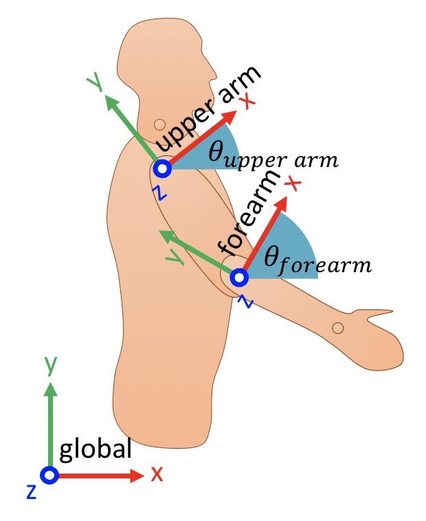

📖 Extracting angles
Contents
📖 Extracting angles#
This section introduce intrinsic/extrinsic cardan angles and Euler angles and demonstrates why rotation order is so important. It also explains how to extract 3d angles from series of homogeneous transforms using Kinetics Toolkit’s ktk.geometry.get_angles function.
Up to now, we learned how to create homogeneous transforms based on known angles, which is easily done using Kinetics Toolkit’s ktk.geometry.create_transforms function. In Biomechanics, it is often useful to do the inverse: calculating frames and transforms from measured kinematics (e.g., using markers or inertial measurement units), and then extracting joint angles from those transforms.
Unfortunately, extracting tridimensional angles from a given homogeneous transform is something that is notoriously difficult to understand, and that is often overlooked. Understanding how to communicate angles is very important, because similar angles can lead to completely different poses if the rotations are not performed in the same order, and around the same set of axes. This section will tackle this concept and will show how to work with 3d rotations, starting with 2d rotations.
📄 2d angles#
At the end of the example of section 📖 Kinematic chains (Figure 1), we had calculated the frames that express the orientation of both the upper arm (\(^\text{global}_\text{upper arm} T\)) and forearm (\(^\text{global}_\text{forearm} T\)) in global coordinates.
Let’s see how we could extract the elbow flexion angle from those two frames.

Figure 1. Local coordinates for both the upper arm and the forearm
The first step is to calculate the homogeneous transform from the upper arm to the forearm. We learned that this is the same as expressing the forearm frame in reference to the upper arm frame.
import kineticstoolkit.lab as ktk
import numpy as np
# Upper arm and forearm frames, expressed in global coordinates
# (calculated in last example):
global_T_upperarm = np.array(
[
[
[0.8660254, -0.5, 0.0, 0.15],
[0.5, 0.8660254, 0.0, 0.7],
[0.0, 0.0, 1.0, 0.0],
[0.0, 0.0, 0.0, 1.0],
]
]
)
global_T_forearm = np.array(
[
[
[0.64278761, -0.76604444, 0.0, 0.34],
[0.76604444, 0.64278761, 0.0, 0.37091035],
[0.0, 0.0, 1.0, 0.0],
[0.0, 0.0, 0.0, 1.0],
]
]
)
# Express the forearm frame in local upper arm coordinates
upperarm_T_forearm = ktk.geometry.get_local_coordinates(
global_T_forearm, global_T_upperarm
)
upperarm_T_forearm
array([[[ 0.93969262, -0.34202014, 0. , 0. ],
[ 0.34202014, 0.93969262, 0. , -0.38 ],
[ 0. , 0. , 1. , 0. ],
[ 0. , 0. , 0. , 1. ]]])
In section 📖 Coordinates: points, vectors and frames, we expressed the generic form of a 2d frame in the xy plane:
Here, \(\theta\) corresponds to the flexion angle of the elbow. To extract θ from the resulting \(^\text{upper arm}_\text{forearm}T\) matrix, we use simple trigonometric relations:
We could also use Kinetics Toolkit’s function ktk.geometry.get_angles to extract this angle automatically:
elbow_angles = ktk.geometry.get_angles(
upperarm_T_forearm, seq="xyz", degrees=True
)
elbow_angles
array([[ 0. , 0. , 19.99999971]])
📄 3d angles#
Single rotations such as the previous example are generally easy to understand. However, in 3d space, there are 3 rotation angles. It is helpful to consider rotations around orthogonal axes (e.g., x, y, z). We already know how to express a pure rotation of \(\theta_z\) degrees around the z axis:
Following the definition of a frame in section 📖 Coordinates: points, vectors and frames, we can also generate the two other rotation matrices:
Now, let’s say we want to rotate a point \(p_\text{initial}\) by \(\theta_x\) around the x axis, and by \(\theta_y\) around the y axis. We may start by rotating the point around the x axis, then around the y axis. In this case, its final, rotated position, would be:
However, if we start by rotating the point around the y axis, then around the x axis, then we would get this final position instead:
Matrix multiplication is not commutative, which means \(T_y T_x\) is not equal to \(T_x T_y\). Therefore, both rotation sequences do not perform the same total rotation.
There are 24 different ways to express 3d rotations using series of 3 angles, with 12 being independent:
6 combinations of cardan angle sequences of intrinsic rotations
6 combinations of cardan angle sequences of extrinsic rotations
6 combinations of Euler angle sequences of intrinsic rotations
6 combinations of Euler angle sequences of extrinsic rotations
Cardan angles#
Also called Tait-Bryan angles, nautical angles, Heading/elevation/bank, or Yaw/pitch/roll, cardan angles express series of rotations around successive orthogonal axes: XYZ, XZY, YZX, YXZ, ZXY, and ZYX. Rotations can be either intrinsic or extrinsic.
Intrinsic rotations means that the coordinate system moves with the object being rotated. For instance, for a sequence of XYZ intrinsic rotations, the object is:
rotated around its x axis;
then around its new y axis that rotated with it during rotation 1;
then around its new z axis that rotated with it during rotations 1 and 2.
Figure 1 shows the six possible rotations using intrinsic cardan angles. In every case, the cube is rotated by 30 degrees around all axes: \(\theta_x = \theta_y = \theta_z = 30^\circ\). The different final poses are only due to the different sequences of rotations.
Figure 1. The six sequences of intrinsic cardan rotations (intrinsic = moving coordinate system)
Extrinsic rotations means that the rotations are all performed around the initial coordinate system. For a sequence of XYZ intrinsic rotations, the object is:
rotated around its x axis;
then around the initial, unrotated y axis;
then around the initial, unrotated z axis.
Figure 2 shows the six possible rotations using extrinsic cardan angles. Again, the cube is rotated by 30 degrees around all axes.
Figure 2. The six sequences of extrinsic Cardan rotations (extrinsic = fixed coordinate system)
Euler angles#
Also called proper Euler angles, of classic Euler angles, Euler angles are different than cardan angles in that the first and third axes are the same. Again, rotations can be either intrinsic (Figure 3) or extrinsic (Figure 4). As for figures 1 and 2, every rotation is a rotation of 30 degrees around a given axis.
Figure 3. The six sequences of intrinsic Euler rotations (intrinsic = moving coordinate system)
Figure 4. The six sequences of extrinsic Euler rotations (extrinsic = fixed coordinate system)
Note
Whereas we viewed 24 possibilities of rotation sequences, each intrinsic rotation as an equivalent extrinsic rotation: \(\text{intrinsic}(\theta_1, \theta_2, \theta_3)\) = \(\text{extrinsic}(\theta_3, \theta_2, \theta_1)\), which means that there is a total of 6 independent cardan angle sequences, and 6 independent Euler angle sequences.
📄 Extracting 3d angles using Kinetics Toolkit#
In the beginning of this section, we introduced Kinetics Toolkit’ ktk.geometry.get_angles function. This one function can accommodate any of these 24 variations of rotation sequences, using the seq parameter:
seq – 3 characters belonging to the set {‘X’, ‘Y’, ‘Z’} for intrinsic rotations (moving axes), or {‘x’, ‘y’, ‘z’} for extrinsic rotations (fixed axes).
For instance, lets create a 3d rotation defined by an extrinsic cardan sequence of 20° about the x axis, then -10° about the y axis, then 15° about the z axis:
total_rotation = ktk.geometry.matmul(
ktk.geometry.create_transforms(angles=[15], seq="z", degrees=True),
ktk.geometry.matmul(
ktk.geometry.create_transforms(angles=[-10], seq="y", degrees=True),
ktk.geometry.create_transforms(angles=[20], seq="x", degrees=True),
),
)
total_rotation
array([[[ 0.95125124, -0.30057782, -0.0690945 , 0. ],
[ 0.254887 , 0.8923018 , -0.37259912, 0. ],
[ 0.17364818, 0.33682409, 0.92541658, 0. ],
[ 0. , 0. , 0. , 1. ]]])
To extract these three angles back from this matrix, we would use a sequence of “xyz”, in lower case to denote extrinsic rotations:
angles = ktk.geometry.get_angles(total_rotation, seq="xyz", degrees=True)
angles
array([[ 20., -10., 15.]])
Note that other combinations would give different and wrong angles:
print(ktk.geometry.get_angles(total_rotation, seq="XYZ", degrees=True))
print(ktk.geometry.get_angles(total_rotation, seq="xzy", degrees=True))
print(ktk.geometry.get_angles(total_rotation, seq="zyx", degrees=True))
print(ktk.geometry.get_angles(total_rotation, seq="ZXY", degrees=True))
[[21.93112279 -3.96197996 17.53557362]]
[[ 22.66398762 14.76688961 -10.34527005]]
[[17.53557362 -3.96197996 21.93112279]]
[[ 18.61644157 19.68349808 -10.62758414]]
📄 Choosing a rotation sequence#
After reading this section, the normal reaction is to be confused about which sequence of rotations to choose to express joint angles. This is a very interesting topic that may never settle completely, but a good starting point would be to consult the 2002 and 2005 recommendations of the International Society of Biomechanics:
Wu, G., Siegler, S., Allard, P., Kirtley, C., Leardini, A., Rosenbaum, D., Whittle, M., D’Lima, D.D., Cristofolini, L., Witte, H., Schmid, O., Stokes, I., 2002. ISB recommendation on definitions of joint coordinate system of various joints for the reporting of human joint motion—part I: ankle, hip, and spine. Journal of Biomechanics 35, 543–548. https://doi.org/10.1016/S0021-9290(01)00222-6
Wu, G., Van Der Helm, F.C.T., Veeger, H.E.J.D., Makhsous, M., Van Roy, P., Anglin, C., Nagels, J., Karduna, A.R., McQuade, K., Wang, X., Werner, F.W., Buchholz, B., Others, 2005. ISB recommendation on definitions of joint coordinate systems of various joints for the reporting of human joint motion - Part II: shoulder, elbow, wrist and hand. Journal of Biomechanics 38, 981–992. https://doi.org/10.1016/j.jbiomech.2004.05.042
These papers propose standard ways to:
define most body segments’ local coordinate systems based on bony landmarks;
define rotation sequences from a proximal segment to a distal segment to express joint angles.
Later in section 📖 Calculating joint angles from a kinematic acquisition, we will use the different Kinetics Toolkit’s functions introduced in this section to calculate joint angles from skin markers by following these recommendations.